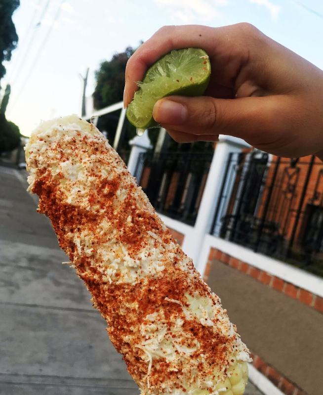
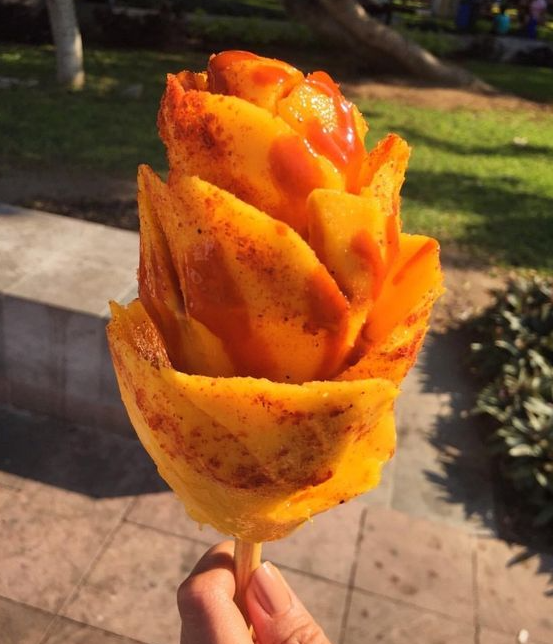
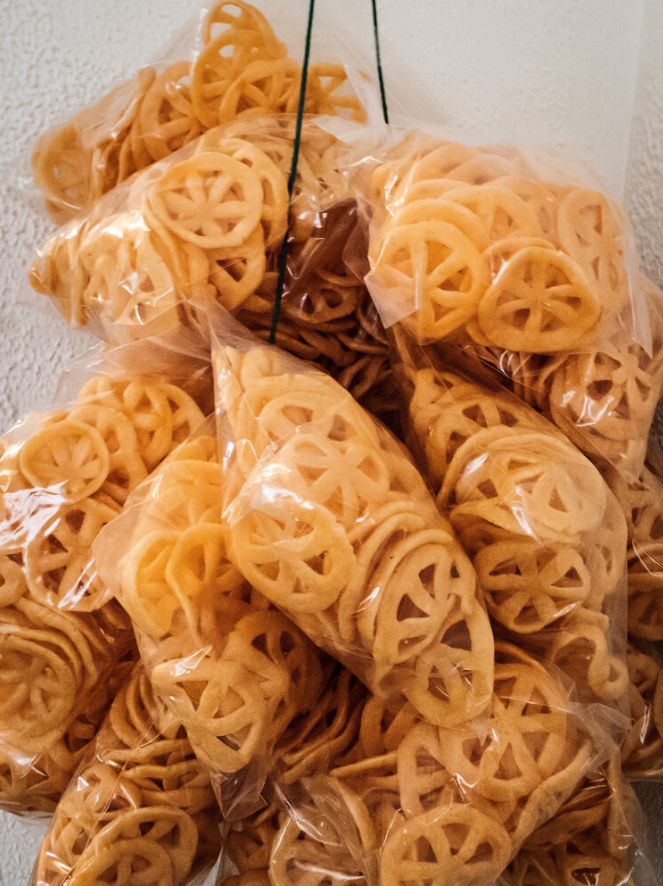

$2.99
Elote is a Mexican street food dish consisting of a roasted or grilled ear of corn topped with a mixture of mayonnaise, cotija cheese, chili powder, and lime juice.
$.99
Raspado is a Mexican shaved ice dessert made by shaving ice and adding flavored syrups or natural fruit juices on top. It's served in a cup or cone and can be found in many street food markets and vendors in Mexico and other Latin American countries.

$3.99
Chamango is a refreshing and sweet and spicy treat that is enjoyed in many parts of Mexico and other Latin American countries. Topped with a spoonful of chamoy sauce (a type of Mexican condiment made from pickled fruit) and a sprinkle of Tajín seasoning (a Mexican seasoning blend made from chili powder, lime, and salt).

$.50
Chicharrones are a type of fried pork skin snack sold in Latin American countries. The chicharrones are typically seasoned with salt, chili powder, or other spices and served as a snack or appetizer.